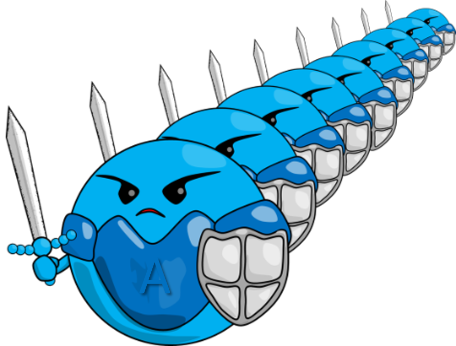

のどが痛くて熱が出るとき、「溶連菌かも」って言われたことない？どんな菌で、なぜ抗菌薬が必要なのか、わかりやすく説明するよ！
A群溶血性連鎖球菌（溶連菌）による咽頭炎の特徴、検査法、治療と後遺症予防について解説します。
Streptococcus pyogenes（GAS）の病原性・診断戦略（Centor/McIsaac基準・RADT・NAAT）・治療・後遺症予防をEBMに基づき概説する。

正式には「溶血性連鎖球菌（ようけつせいれんさきゅうきん）」。長いのでみんな「溶連菌」と呼んでいます。
顕微鏡で見ると、丸い菌が鎖のようにつながっているのが特徴です。
溶連菌にはいくつか種類がありますが、子どもの咽頭炎（のどのかぜ）を引き起こすのは主に「A群」という種類です。「A群溶連菌」とも呼ばれます。
A群溶血性連鎖球菌（GAS: Group A Streptococcus）は、グラム陽性球菌で連鎖状に配列します。学名 Streptococcus pyogenes（「膿を作る連鎖球菌」の意）。β溶血性を示し、血液寒天培地で赤血球が完全溶解する透明溶血帯を形成します。
S. pyogenes（GAS）はLancefield A群に属するグラム陽性β溶血性連鎖球菌。ペプチドグリカン細胞壁の外側にヒアルロン酸莢膜（貪食回避）、Mタンパク（200超の血清型；フィブロネクチン結合・補体不活化・抗貪食）を有する。
主要病原性因子：①ストレプトリジンO/S（β溶血・心毒性）、②発熱毒素（SPE-A/B/C；超抗原性、猩紅熱・TSS関連）、③ヒアルロニダーゼ・DNase・プロテアーゼ（組織侵入）、④M1T1クローン（侵襲性感染症と関連）。
いちばん多いタイプ。のどが赤くはれて、食べ物が飲み込めないくらい痛くなることも。発熱も多い。
まれだけど重症になることがある。「人食いバクテリア」と呼ばれることもあるが、非常にまれ。
咽頭炎が全身に広がったとき、「猩紅熱」という病気になることがあります。
苺（いちご）のように赤くブツブツした舌（苺舌）が特徴的。体にも発疹が出ます。
突然の高熱・強い咽頭痛・嚥下痛・頸部リンパ節腫脹。扁桃に白苔（滲出物）を形成することがある。咳・鼻汁はほとんどなし（ウイルス性との鑑別点）。
咽頭炎に加え、発熱毒素（Streptococcal Pyrogenic Exotoxin）による全身性紅斑（砂紙様）・苺舌・Pastia線（皮膚のひだへの発疹集積）。
壊死性筋膜炎・菌血症・多臓器不全。致死率30〜50%。感染症法2類感染症（全数報告）。成人・高齢者に多い。
膿痂疹（とびひ）・丹毒・蜂窩織炎（皮膚感染）。産褥熱（歴史的に重大）。
非侵襲性：咽頭・扁桃炎（小児で主要）・膿痂疹・猩紅熱・産褥熱。咽頭炎の典型は突然発症の咽頭痛・嚥下痛・発熱≥38.5°C・扁桃滲出物・前頸部リンパ節腫脹。咳・鼻汁・声枯れ・口腔潰瘍の存在はウイルス性を支持しGASに反する。
侵襲性（iGAS）：菌血症・壊死性筋膜炎・肺炎・化膿性関節炎・Streptococcal Toxic Shock Syndrome（STSS）。SPE超抗原がT細胞の多クローン活性化→サイトカインストーム。致死率STSS 30–50%・壊死性筋膜炎 25–35%。感染症法2類（全数報告）。
猩紅熱：SPE-A/B/CによるT細胞活性化と血管拡張。砂紙様紅斑（顔面口囲蒼白・躯幹・四肢）・苺舌（白苔→数日後に赤い乳頭突出）・Pastia線・落屑（回復期）。
保育園や幼稚園、小学校に通う子どもがかかりやすい病気です。集団生活の中で広がりやすい。
一度かかっても免疫ができにくいため、何度でもかかることがあります。
主に5〜15歳の小児に多発。保育所・学校などの集団生活環境で流行しやすい。成人にも感染するが頻度は低い（ただし劇症型は成人・高齢者に多い）。
感染経路は飛沫感染・接触感染が主体。潜伏期間は2〜5日。感染後の咽頭保菌が長期化することがある。Mタンパクには多数の血清型があり型特異的免疫が得られるため、異なる血清型での繰り返し感染が起こる。
GAS咽頭炎は5〜15歳に好発（成人の急性咽頭炎の10–15%、小児の15–30%を占める）。季節性：秋〜冬〜春（温帯地域）。無症候性保菌率：小児5〜21%（流行時に増加）。Mタンパクは200超の血清型（emm型）を有し型特異的免疫→異なるemm型で再感染。iGAS（侵襲性）はM1（emm1）・M3（emm3）型が多い（M1T1クローン：世界的に優勢）。ワクチン開発においてMタンパク多型性が課題。
病院ではのどを綿棒でこすって、その場で結果がわかる迅速検査をします。
| 検査法 | 感度 | 特異度 | 結果まで | 特徴 |
|---|---|---|---|---|
| 迅速抗原検査（RADT） | 80–90% | 95–99% | 10–15分 | 外来での標準的スクリーニング |
| 咽頭培養 | 90–99% | 99% | 24–48時間 | 参照標準。RADT陰性の小児に推奨 |
| NAAT（PCR等） | 97.5% | 95.1% | 数時間〜1日 | 感度最高。保菌者と現感染の区別困難 |
IDSA 2025 GASガイドライン（Linder et al., Clin Infect Dis 2025）では臨床スコアリングによるリスク層別化を推奨。症状・所見のみでGAS咽頭炎を診断することはせず、適切な患者に検査を行う。
| スコア | GAS確率 | 推奨対応 |
|---|---|---|
| ≤0 | 1–2.5% | 検査不要・抗菌薬不要 |
| 1 | 5–10% | 検査不要・抗菌薬不要 |
| 2 | 11–17% | RADT施行・陽性なら治療 |
| 3 | 28–35% | RADT施行・陽性なら治療 |
| ≥4 | 52% | RADT施行・陽性なら治療（培養確認も考慮） |
感度80–90%・特異度95–99%。陽性なら治療開始。小児での陰性は培養またはNAATで確認推奨（感度不十分）。成人での陰性は培養確認を省略可（GAS事前確率低）。
感度97.5%・特異度95.1%（メタ解析：Dubois et al., CMI 2021）。RADTより高感度だが、無症候性保菌者も検出するため過剰治療リスクに注意。NAATs陽性＋臨床症状で総合判断。
溶連菌にはペニシリン系の抗菌薬がとてもよく効きます。
ペニシリン系抗菌薬（アモキシシリン・ペニシリンV）が第一選択薬です。GASにはペニシリン耐性の報告はなく、有効性が高い。投与期間は5〜10日間（近年、5日間投与の非劣性が示されている）。
アモキシシリン（AMPC）またはペニシリンV。小児は体重あたりで投与量を調整。
セフェム系（第1世代）またはクリンダマイシン・クラリスロマイシン。マクロライド系は耐性に注意。
GASは全薬剤感受性ペニシリンに対して感受性を維持（耐性報告なし）。第一選択はペニシリンV（PVK）またはアモキシシリン（AMPC）。Cochrane系統的レビュー（Hedin et al., 2023）では複数の抗菌薬クラス間で臨床的有効性に有意差なし。
投与期間：Skoog Ståhlgren et al.（BMJ 2019）のRCTでは、PVK 4回/日×5日 vs 3回/日×10日で非劣性を実証（臨床治癒率：88% vs 85%）。IDSA 2025では5日間コースを許容（後遺症予防効果維持）。ただし10日間投与は依然として標準オプション。
AMPC 500 mg（成人）1日2–3回×10日（または5日）。小児：25–50 mg/kg/day。PVKも同等。
遅延型：第1世代セファロスポリン（セファレキシン）。即時型（アナフィラキシー歴）：クリンダマイシン or アジスロマイシン（マクロライド耐性率10–30%に注意）。
腎臓に炎症が起きる病気。血尿やむくみが出ることがある。治療後1〜3週間後に起きることも。
心臓の弁（べん）に影響が出ることがある。きちんと治療すれば防げることが多い。
咽頭炎後1〜3週間後に発症。血尿・蛋白尿・高血圧・浮腫。特定のM型（腎炎起炎性菌株）との関連。抗菌薬治療でも完全には予防できない（リウマチ熱とは異なる）。
咽頭炎後2〜4週後。心炎・関節炎・舞踏病・皮膚症状（輪状紅斑・皮下結節）。適切な抗菌薬治療で90%以上予防可能。発展途上国では依然として主要な小児心疾患の原因。
急性リウマチ熱（ARF）：GAS咽頭炎後2〜4週。分子擬態（GASのMタンパク・心筋ミオシンとの交差反応）によるII型過敏反応が有力機序。Jones基準（大基準：心炎・多関節炎・舞踏病・輪状紅斑・皮下結節）で診断。適切な抗菌薬治療でリウマチ熱発症を86–90%低減（Walker et al., Clin Microbiol Rev 2014）。再発予防（二次予防）としてベンザチンペニシリンG筋注（心炎あり→成人まで、なし→21歳まで）。
急性糸球体腎炎（APSGN）：咽頭炎後1〜3週（皮膚感染後は3〜6週）。特定のM型（M1, M4, M12, M25など「腎炎起炎性株」）による免疫複合体（IgG-補体）の糸球体基底膜沈着。抗菌薬治療は流行の拡大防止に有効だが、個人の腎炎発症予防効果は限定的。多くは自然軽快するが高齢者・重症例では腎不全移行に注意。
ARF：咽頭炎のみ誘因・分子擬態・抗菌薬で予防可・心弁膜症リスク。
APSGN：咽頭炎+皮膚感染が誘因・免疫複合体・抗菌薬予防効果限定・多くは自然治癒。
小児GAS感染後に強迫性障害・チック症状が急性発症するとされる概念（Pediatric Autoimmune Neuropsychiatric Disorders Associated with Streptococcal infections）。病態・因果関係は依然議論中。
残念ながら溶連菌のワクチンはまだありません。
予防のためにできることは、手洗い・うがい・マスクなどの基本的な感染対策です。
GASに対する承認済みワクチンはない。Mタンパクの多型性（200超の血清型）がワクチン開発の大きな障壁。現在、Mタンパク多価ワクチン・保存領域（C-repeat region等）をターゲットとした研究が進行中。
感染対策は手洗い・飛沫防止が中心。抗菌薬投与開始後24時間で感染性がなくなるとされ、登校・登園の目安となる。
GASワクチンは未承認。Mタンパクの高度多型性（>200 emm型）・型特異的免疫・型間交差免疫の限界がワクチン設計を困難にしている。開発中のアプローチ：①多価Mタンパクワクチン（26価等）、②Mタンパク保存領域（J8ペプチド・p*17等）、③表面タンパク（SpyCEP・C5a peptidase等）標的ワクチン、④mRNAワクチンプラットフォームの応用。リウマチ熱・iGAS予防の観点からWHOはGASワクチン開発を優先事項としている。
大人でのどが腫れるとき、溶連菌とよく似た症状の「伝染性単核球症（でんせんせいたんかくきゅうしょう）」という病気があります。
これはEBウイルスというウイルスによる病気です。
伝染性単核球症（EBウイルス感染症）は咽頭痛・発熱・扁桃炎が溶連菌咽頭炎と類似する。鑑別ポイント：
| 所見 | GAS咽頭炎 | 伝染性単核球症 |
|---|---|---|
| 年齢 | 小児〜成人 | 思春期〜若年成人に多い |
| リンパ節 | 前頸部のみ | 後頸部リンパ節腫脹 |
| 脾腫 | なし | あり（10–15%） |
| 口蓋点状出血 | あり得る | 多い |
| 異型リンパ球 | なし | あり（増多） |
| RADT | 陽性 | 陰性 |
| AMPCへの反応 | 治療効果あり | 発疹出現（95%） |
EBウイルス（HHV-4）による伝染性単核球症（IM）はGAS咽頭炎との鑑別が最重要課題の一つ。Ebell et al.（JAMA 2016）の系統的レビューでは、IMを予測する所見として後頸部リンパ節腫脹（LR+ 3.2）・脾腫（LR+ 2.0）・口蓋点状出血（LR+ 2.7）・異型リンパ球≥10%（LR+ 5.2）が有用。
アモキシシリン・アンピシリン（ABPC）投与で95%の患者に麻疹様薬疹が出現（GAS用抗菌薬との誤用リスク）。これは薬物アレルギーではなく、IM特異的反応（機序不明確；免疫複合体またはEBV感染B細胞との相互作用）。
診断補助：EBVモノスポットテスト（感度75–85%、特異度97–99%；発症1週以内は偽陰性多い）・EBV-VCA IgM/IgG・末梢血塗抹（異型リンパ球）・血算（リンパ球増多）・肝機能（ALT・AST上昇）。